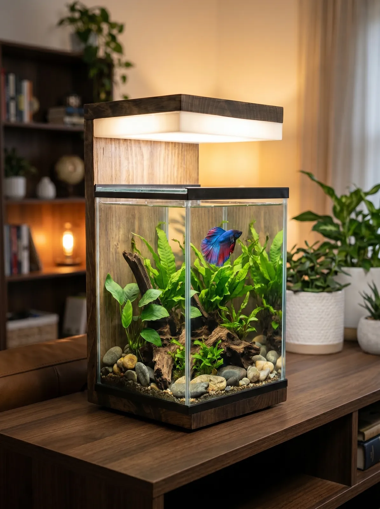
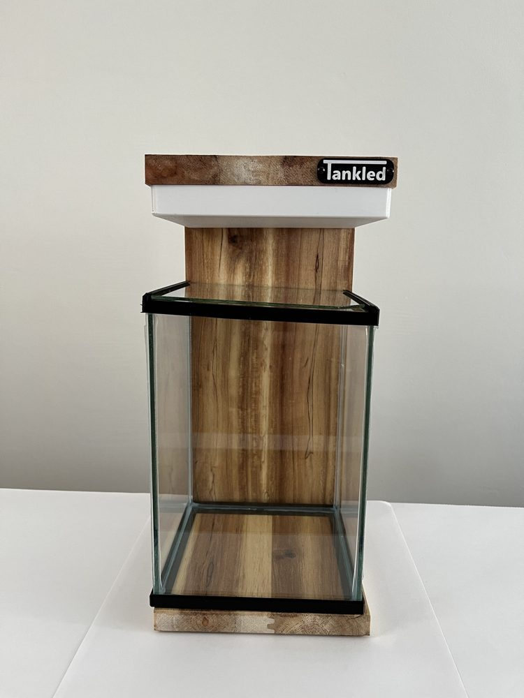
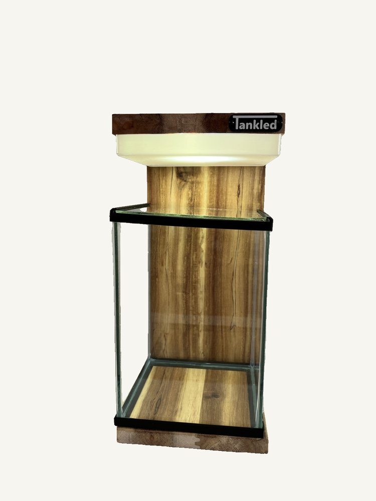
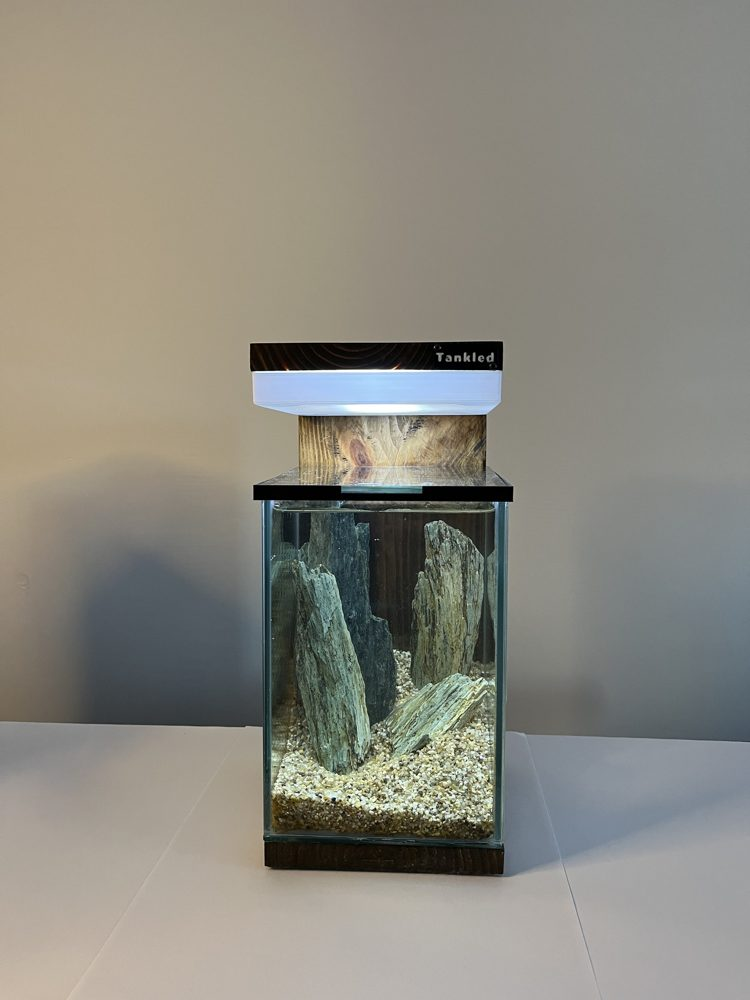
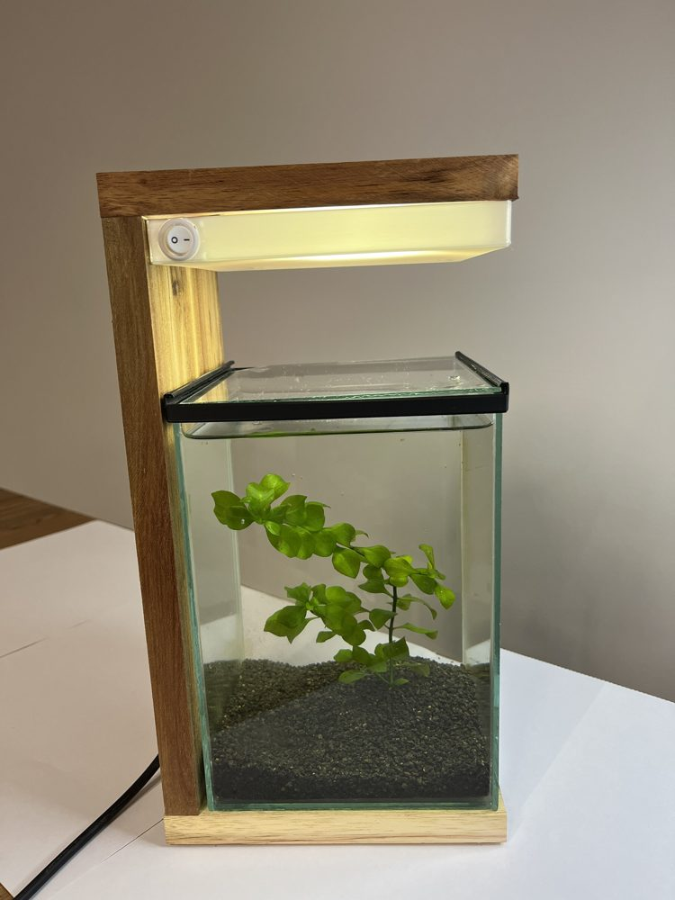
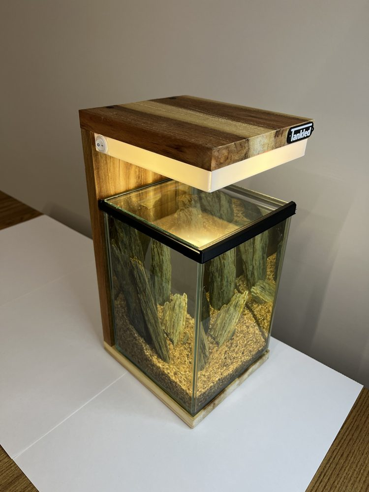

Betta akvaryumu: Tankled Betta Serisi

Betta Serisi, betta balığı için tasarladığımız, Ankara'daki atölyemizde masif tik ahşaptan elde üretilen kompakt bir akvaryumdur. Çalışma masası, komodin ya da kitaplık rafı için idealdir; akşamları sıcak ışığıyla bir abajur gibi, gündüz gün ışığı tonuyla bitkili bir mini doğa gibi görünür.
Teknik özellikler
- Ölçü: 14 × 14 × 20 cm
- Gövde: Tik yağıyla korunan masif tik ahşap
- Kapak: Sürgülü buhar kapağı (buharlaşmayı azaltır, bettanın zıplamasını önler)
- Aydınlatma: 3000K, 4500K ve 6500K olmak üzere üç ışık tonlu LED
- Elektrik: 220V
- Sistem: Low-tech; CO₂ ve yoğun gübre gerektirmez
Yalnızca betta için değil
Aynı ürün bitkili bir nano akvaryum, karides akvaryumu, teraryum, sukulent saksısı ya da dekoratif bir abajur olarak da kullanılabilir. Uygun canlıları balıklar rehberimizde, bitkileri bitkiler rehberimizde bulabilirsiniz.
Hazır kurulum seti
Talep üzerine Betta Serisi'ni zemin, canlı bitkiler ve ekipmanla hazır kurulmuş olarak teslim ediyoruz. Kendiniz kurmak isterseniz betta akvaryumu kurulum rehberimiz ve nano akvaryum bakım rutinimiz adım adım yol gösterir.
Fotoğraflar






Betta Serisi'nin farklı açılardan ve üç ışık tonunda görüntülerini galeride inceleyebilirsiniz. Daha büyük ya da farklı ölçüde bir model isterseniz özel ölçü akvaryum sayfamıza bakın.
Ankara'da el yapımı akvaryum
Ostim'deki atölyemizde masif tik ahşaptan mobilyalı ve dekoratif akvaryumlar üretiyoruz. Ölçünüze özel tasarım için bize ulaşın.
WhatsApp ile yazın Hemen arayın